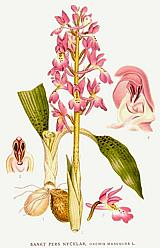
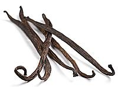

SAFARI
Users
General & History
Orchids live in most climates on every continent except Antarctica. The family belongs to the order Asparagales (Asparagus) which belongs to the clade Monocots, unplaced within the clade Angiosperms (flowering plants). It may seem odd that Orchids are related to Asparagus, but that's the way the DNA crumbles.
Orchids are a pretty odd lot anyway. Those that live in temperate zones are like regular plants with roots and stems and chlorophyll, but aren't much noted for flowers. Others live on bare rocks surviving on air, water and whatever litter blows or washes their way. The majority are tropical and live up in trees anchored by aerial roots and never touch the ground. These roots also gather moisture and such nutrients as may wash down the tree, but they are not parasites. A few have no chlorophyll and depend on fungus to digest food for them.
Varieties
Salep
 [Orchis mascula and other species]
Several orchids that grow wild and cultivated in Turkey are prized for their root tubers. These tubers are ground up to produce a starch-like polysaccharide used to make a dessert drink called "salep" - once used as far away as England and Germany, before the arrival of coffee and tea.
Today salep is so much in demand in Turkey for the drink, and
especially to make an ice cream called Dondurma and other desserts, its
export is illegal. Anything called "salep" found outside Turkey is made
artificially. The name is derived from Arabic for "fox testicles",
descriptive of the tuber's appearance and tendency to come in pairs.
The ancient Romans (and others) considered salep a powerful aphrodisiac
through sympathetic magic.
Illustration from Bilder ur Nordens Flora - public domain.
Vanilla Bean
 [Vanilla planifolia, Vanilla pompona, Vanilla tahitiensis]
The dominant vanilla orchid (planifolia) is native to Mexico but has been planted in other tropical areas with Madagascar and Indonesia the largest producers. Another species (tahitiensis) is grown in French Polynesia, but in comparatively minute quantity.
Vanilla beans are long seed pods containing thousands of seeds, but the
seeds are of no importance. The pods are picked green and then killed,
usually by heat or sun drying. They are then fermented for 7 to 10 days
at high temperature and humidity allowing enzymes to convert substances
in the beans into vanillin and something like 200 other flavoring
components. The beans are then dried and sorted by quality.
Photo © i0125.